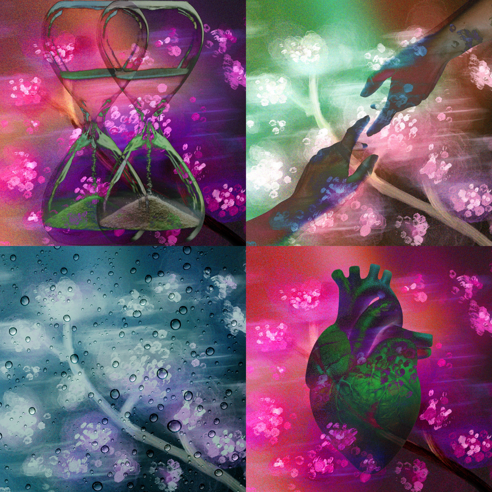

ABOUT THE PROJECT
An interactive music project on the theme of Upkeep, created by Tayla Kane, Kanitpat Sudsawat, Shiya Wang, and Jackson Moore.

LISTEN TO THE EP OPEN ON SOUNDCLOUDDIDACTIC
“Repair/Decay directly responds to the theme of Upkeep by intentionally making itself something to be maintained. Rather than presenting Upkeep as a subject, it makes the audience responsible for performing it: without human intervention, the system inevitably deteriorates. This premise challenges a core assumption within the music industry, where a mixed and mastered track is conventionally treated as a complete and stable object. Here however, the album becomes an interactive system where instability and maintenance is a necessary part of the listening experience.
The project was developed with a federated co-authorship model. Tayla Kane, Kanitpat Sudsawat, and Shiya Wang took on lead roles aligned with their respective creative disciplines, including music/sound, visual communication, and interactive design, and Jackson Moore, with experience in each area, led the project as a whole. The team continually met and communicated in and outside of workshop discussions, where feedback from each session helped refine how elements pieced together. This approach enabled distinctive creative autonomy in each area while working towards a cohesive outcome.
Technically, the songs are assembled in the browser from individual track stems (drums, bass, guitars, etc.). Over time, randomly triggered ‘decay events’ can cause the individual tracks to distort, detune, stutter, and more. The audience is invited to inspect tracks, view the maintenance log, and isolate and restore affected tracks through little interactive games. The concept becomes legible through sound and visual feedback; a system that can be heard, observed and influenced.
Creative expression emerges from the relationship between this functionality and the website’s visual language. Floral imagery sits alongside old-computer interfaces, switches and flashing lights, placing nature against technology, and repair against decay. Responsive colour, movement, hover effects and button sounds make interaction perceptible, while the music’s uplifting, relaxed energy contrasts with a system that continually works against it. This tension is central to the work: upkeep becomes both a practical task and a negotiation between the desire for stability and the inevitability of change.”
MEET THE MAKERS
THE PEOPLE BEHIND THE PROJECT
Meet the people who brought Repair / Decay to life through music, graphic design, and interaction.
Led interaction design, shaping how audiences navigate and engage with the experience.
VISIT PORTFOLIO JACKSON MOORE PROJECT LEADER / MANAGERLed the project as a whole, coordinating the team and guiding the work from concept to completion.
VISIT PORTFOLIO TAYLA KANE MUSIC & SOUND LEADLed music and sound writing and engineering, shaping the songs, recordings, and production.
VISIT PORTFOLIO KANITPAT SUDSAWAT GRAPHIC DESIGN LEADLed graphic design, developing the project's visual language and graphic identity.
VISIT PORTFOLIO